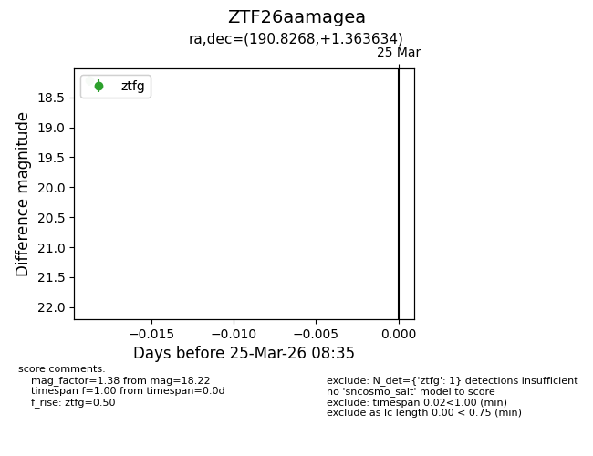
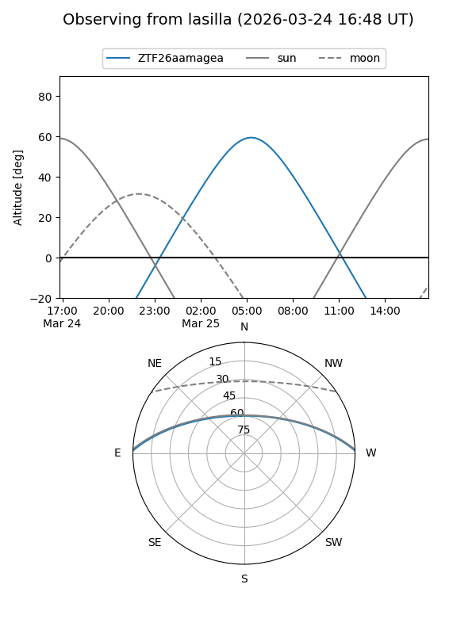
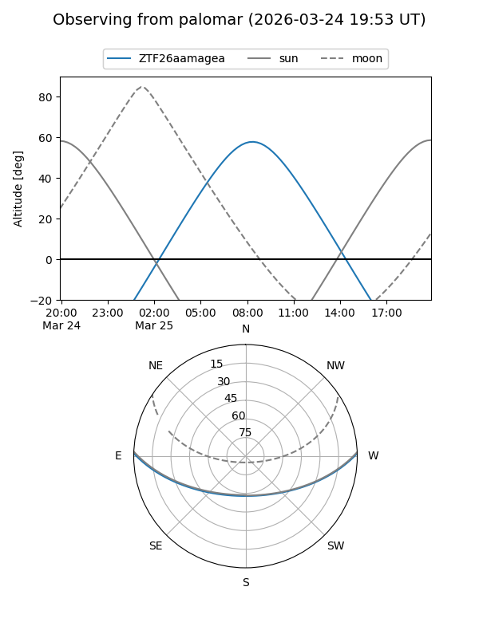

ZTF26aamagea
Target ZTF26aamagea at 2026-03-25 08:38
Aliases and brokers:
FINK: link
Lasair: link
ALeRCE: link
alt names
ZTF26aamagea (ztf,fink_ztf)
Coordinates:
equatorial (ra, dec) = 190.8268,+1.36363
equatorial (HMS+DMS) = 12:43:18.42,+01:21:49.08
galactic (l, b) = (298.2651,+64.16168)
Flags:
Photometry:
last ztfg=18.22
1 ztfg detections
Lightcurve

Visibility


Additional plots